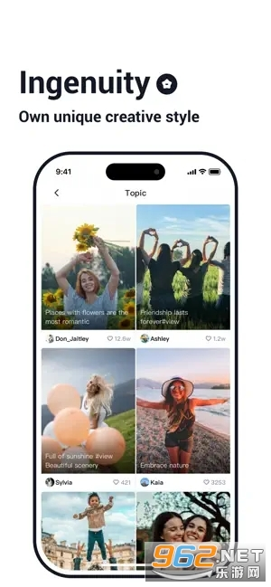

短视频剪辑选 TiPss 还是大厂工具？这款小众 app 的三个差异化设计
大厂剪辑工具用户多但版权灰色地带长期存在，TiPss 从正版音乐库和刷灵感闭环切入，给在意合规的创作者提供了另一条路。
短视频剪辑工具这个赛道，大厂系产品占了绝对大头——功能全、用户基数大、教程一搜一堆。但也有一批小工具不拼"全"，而是在某个垂直方向做深做透。TiPss 就属于后者，tipss官网上能看到它的定位——不走大而全路线，而是专注在版权合规和创作前半段的设计思路，正好踩中了一部分创作者的真实痛点，值得单独拎出来聊聊。
同类工具的格局：为什么大厂之外还需要 TiPss
先交代一下这个品类的基本盘。大厂工具的优势非常明显：从素材管理、剪辑操作到导出分发，全链路都覆盖了，特效库、AI 自动剪辑这类功能也在持续堆料。但老用户用久了会发现两个绕不开的问题——一是音乐版权的灰色地带，二是创作流的割裂。
先说版权。很多工具内置的音乐素材，到底能不能商用、会不会被平台判定侵权，一直是社区里反复讨论的话题。创作者剪完一条视频，发布到不同平台可能得到完全不同的审核结果，这种不确定性对于认真做内容的人来说是个隐患。
再说创作流。绝大多数剪辑工具的设计逻辑是"打开 app → 导入素材 → 开始剪"，但真实的创作不是从这一步才开始的。刷信息流的时候看到一段好看的画面、一个舒服的配色、一句戳人的文案，这些都是灵感的源头。传统工具在这一步是断的——你得截屏记下来，等下次打开剪辑台的时候，之前的配色灵感可能已经忘了大半。
TiPss 的核心设计思路，就是试图解决这两个问题。它没有在特效库或 AI 功能上和大厂硬刚，而是把资源投在了正版音乐和灵感采集上。想体验一下的话直接从官方下载拿一份就行。
它的第一个差异化：正版路线的音乐库
音乐库是 TiPss 最显眼的卖点。同类工具的音乐库通常有两种路线：要么版权模糊、全靠用户自行承担风险；要么走平台授权但曲库有限。TiPss 主打的是"正版免费可用"，虽然具体的版权范围以 app 内的标识为准，遇到疑问时去tipss文档查一下最新说明比较稳妥，但这个定位本身就给了创作者明确的预期——你用这里的音乐，大概率不会因为版权问题被下架。

更关键的是它的分类逻辑。大厂工具的音乐分类通常按风格硬切（流行、摇滚、电子……），找音乐的时候你得自己在海量曲目里翻。TiPss 在风格之外增加了情绪和场景的维度——咖啡馆、夜晚、旅行，这些标签直接对应你想做的视频类型。做一条深夜美食探店的视频，搜"夜晚"就能拿到一批氛围对的曲子，不用在几百首轻音乐里一首首听过来。
还有一个小细节：选中音乐之后可以直接试听，不用先导入时间轴再播放。这个体验在手机端特别重要，屏幕小、操作步骤多，能省一步是一步。收藏功能也做得不花哨，常用的音乐直接丢收藏夹，下次进曲库第一屏就能看到。
它的第二个差异化：把灵感采集做进创作流
取色板功能是 TiPss 最有意思的设计——它没有把取色当作滤镜调整的附属工具，而是把它做成了一个独立的、前置的创作环节。
刷信息流的时候看到一段画面配色特别舒服怎么办？传统做法是截屏、存相册，等下次打开剪辑台的时候再想办法把颜色提出来。但从"刷到"到"真的开始剪"之间可能隔了好几天，那时候你大概率已经记不清当时觉得好看的配色是什么了。
TiPss 的取色板有两种用法：拍照取色和图片取色。刷到好画面先截屏，打开取色板选图片取色，点一下刚才的截屏，3~5 个主色调就自动提出来了。色值直接复制成十六进制格式，后面剪辑的时候调滤镜、选文字颜色、搭调色板，直接抄就行。这个工作流把"刷灵感"和"动手剪"之间的间隙彻底补上了——配色灵感不会在等待中丢失。

我用过的其他剪辑工具里，取色板通常藏在滤镜编辑的二级菜单里，只有当你已经导入素材、进入滤镜调整时才会想到用它。TiPss 反过来了，取色是可以在"还没开始剪"的时候就做的事，这个设计逻辑的差异，体现了它对创作流程的理解——创作不是从"打开剪辑台"才启动的，而是从"被某个画面触动"那一刻就开始了。
它的第三个差异化：自动保存从导入那一刻开始
这个点很小，但在手机端的实际使用频率很高。
手机上的操作场景跟电脑不一样——你剪到一半可能突然来个电话、切出去回条消息、不小心碰到 home 键。大厂工具的自动保存机制通常是"间隔几分钟保存一次"或者"你点保存按钮的时候保存"，TiPss 的做法更激进：素材一导入时间轴，自动保存就开始工作了。切出去多久回来都能接着上次的进度，不用担心半天白剪。
为这些优势付出的代价
说了三个优点，也得说清楚 TiPss 为这些差异化取舍了什么。
首先，它不是"大而全"的路线。大厂工具有的那些花哨功能——AI 自动生成字幕、一键特效模板库、智能卡点——TiPss 基本没有。如果你是纯新手、想找一个"保姆级"工具跟着教程一步步剪，它可能不是最佳选择。它的功能设计偏"懂创作的人用"，工作流需要你自己建立认知。
其次，创作者收益这块社区反馈有争议。app 内有创作者服务中心、广告分成和品牌合作的入口，但规则调整比较频繁，提现门槛也因地区而异。如果你是冲着收益功能来选择工具，建议先在 app 内找到最新的规则说明，不要只看网上过时的信息。
最后，功能更新节奏。大厂工具每周都在堆新功能，TiPss 的更新频率慢一些，迭代方向也集中在打磨已有功能而不是开新坑。这意味着你不会频繁被新功能打扰，但也意味着某些你期待的特性可能一直不会有。
什么样的人该选 TiPss
如果你已经对大厂剪辑工具的版权灰色地带感到不安，经常因为发布后被判定侵权而返工，TiPss 的正版音乐库会让你少很多麻烦。
如果你习惯从刷信息流找灵感，经常因为刷到好画面却没法及时记下配色而懊恼，TiPss 的取色板工作流正好对上这个痛点。
如果你是已经有固定创作习惯的内容生产者，不需要花哨的 AI 功能和海量特效库，只想要一个在版权和基础体验上靠谱的工具，TiPss 值得试一试。
但如果你的需求是"我是新手，帮我一步到位把视频剪好"，或者你追求特效最全、AI 功能最强的一站式方案，那大厂工具可能还是更合适。
简单说，选 TiPss 不是为了它"什么都能做"，而是因为它在你真正在意的那几个点上，做得比大厂工具更靠谱。
这套 TiPss 的完整资料在三个仓库都能拿到，方便不同网络环境下查阅——GitHub 主仓库、Gitee 国内镜像、GitCode 同步备份，内容完全一致。